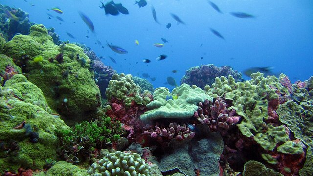

生命5–11 岁本地观察
栖息地观察站
栖息地是生物能活下去的条件组合：吃什么、喝什么、躲在哪、需要多大一块地方。它不是一张好看的风景明信片。湿地鸟要浅水、泥里的食物和芦苇一类的藏身处；沙漠鼠要能保存水分的食物、白天躲热的洞——两张清单不能互换。改一条条件，谁能住可能就变。本页练「四格齐了才是家」。因为枯木和巢洞是别人的隐蔽、拆掉清单就缺一格，所以走指定路，不拆巢、不掏洞、不把枯木清光。舞台上的「宜居」数字只是比较尺子，用来比「资源齐不齐、稳不稳」，不是风景评分，更不是完整生态名录。
两个地方并排放


两边都空着。到图鉴里点两个不一样的栖息地。
栖息地宜居台 · 真参数
调资源齐全（水/食/蔽）与条件稳定。栖息地是条件组合，不是风景明信片——缺水或缺食物都会掉分。
栖息地是吃喝藏走同时凑齐，不是风景明信片。四格齐了才是家。
先猜一猜，再拖滑杆
第 1 题：资源够、稳定够（资源 32、稳定 10）。宜居是因为吃喝藏走四格齐了，还是因为风景好看？
先押一个，再拖到 资源齐全 32、条件稳定 10。
第 2 题：资源 5、稳定 3，还宜居吗？
押好后拖到 资源齐全 5、条件稳定 3。
第 3 题：资源最少 4、稳定最弱 2。还能明显宜居吗？
押好后资源 4、稳定 2。
先开清单，再看风景
先点「湿地」，再对照「沙漠」。栖息地不是一张好看的风景明信片。对一种动物来说，它是食物、水、隐蔽和活动空间能不能同时凑齐。缺一张卡，漂亮的景色也留不住它。
湿地鸟要浅水、泥里的食物和芦苇一类的藏身处；沙漠鼠要能保存水分的食物、白天躲热的洞。两张清单不能互换。突然把沙漠浇成草坪，对它不是优惠。
因为枯木和巢洞是别人的隐蔽、拆掉清单就缺一格，所以走指定路，不拆巢、不掏洞、不把枯木清光。舞台上的「宜居」读数只比较「资源齐不齐、稳不稳」，不是风景评分，更不是完整名录。
栖息地图鉴
下面有 12 张卡。点两张，比它们最缺的是水、热还是食物。再点一次同一张可以取消。
还没选。点两个地方，比一比缺的是水、热还是食物。
猜一猜
沙漠里仙人掌把水存在茎里，主要因为那里最缺什么？
先押一个，再点「看答案」。
任务：选两个栖息地，说出各自最缺什么
先点两张图鉴卡。再给每一个地方挑一样最缺的：水、热，或食物。两个地方都选好，再点「记下这次比较」。
第一个地方最缺
第二个地方最缺
开放式提示不会代替上面的正式任务。
尚未完成：先在图鉴里点两个不一样的栖息地。
先列水、食物、藏身处；只有风景还不算一个家
同一只动物、同一块地方，只看四格齐了没有。给一种动物写四格：吃什么、喝什么、躲在哪、需要多大一块地方。风景照只当封面，不当证据。这样比，才知道栖息地是条件组合，不是好看的颜色。
完成句写「缺了水、藏身处或食物」，不要写「这里好美所以动物一定多」。禁止「风景好看就是家」。因为枯木和巢洞是别人的隐蔽，所以走指定道，不拆巢、不掏洞。
湿地鸟要泥里的小动物，不是任何绿色，清单不能随便换，缺食这一格就不是家。
沙漠动物的水账和鸭子不同，有的要从食物或晨露里来，水格空了就住不下。
没有藏处，食物再多也不敢待。洞和枯木常常就是这一格，风景封面补不上。
路把绿剪开以后，清单齐了也走不通，地址还在地图上却过不去，走这一格断了。
只有颜色好看，四格仍可能是空的。风景封面不能当证据，家不是两个字。
抄近路会踩塌别人的隐蔽，等于亲手抽走清单上的一格，家就散掉了。
- 选湿地鸟。写下它的四格。
- 选沙漠鼠。四格和鸟有几格不能共用。
- 只留风景照。问：四格还在吗？
- 改一个条件。水被抽干或灌木被砍，谁先走。
动物住的地方要有得吃、有得藏。光好看不够。
把栖息地写成清单。湿地和沙漠的清单几乎不能换。人修路、抽水、清枯木，是在抽走某一格。
栖息地是「地址」，生态位是「它在那里干什么」。破碎化让地址还在地图上，却不再连成能走的网。保护要保条件，不是保一张封面照片。
这在教什么：孩子要能给两种动物列出不同的必需清单，并指出「只有风景」缺了哪一格。完成看的是条件对照，不是背「栖息地」三个字。
- 沙漠鼠能搬进湿地明信片吗？两张清单有几格不能共用？
- 砍光灌木，谁先消失？抽走的是哪一格？
- 小路抄近路踩到的是风景还是隐蔽？
- 只有一张绿油油的照片，怎样证明它还不是栖息地证据？
地址和职业，以及路把地址剪碎
同一片林子里，啄木鸟和松鼠的地址看起来重叠，职业不同：一个凿虫，一个主要吃种子和坚果。保护只喊「有树」时，可能保住了封面，丢了其中一种的职业所需。栖息地是地址，生态位是它在那里干什么。
道路、沟渠、光污染会把一块够大的栖息地剪成许多不够大的碎片。清单上的四格「在附近都有」，动物却过不去。地图上还绿，不等于家还连着。
城市里的栖息地常常是边角：雨洼、树篱、未清的落叶堆。把院子收得像展览，等于收走隐蔽和食物。
指定道既是为了人的安全，也是为了把微生境留给清单上的那几格。本页「宜居」读数只比较方向，不是风景评分。
地址是吃、喝、藏、走四格同时凑齐的那块地方，不是一张绿照片，也不是「家」两个字。
职业是它在那里吃什么、躲什么。同一片林子里可以地址重叠、职业不同。
路和沟把地址剪碎以后，地图上还绿，动物却过不到下一格，走不通就不算家。
院子收得像展览，隐蔽和食物两格会一起空掉，封面再好看也不是家。
对照：湿地清单 · 沙漠清单 · 只有风景
三列并排时，禁止用「都需要自然」一笔带过。公平比法是各写四格，不要写成「这里好美所以动物一定多」。
湿地清单：浅水或湿泥、无脊椎或小鱼、芦苇或岸草隐蔽、一块不被天天踩的滩。抽干水，四格一起塌。沙漠清单：从食物或晨露来的水、种子或昆虫、洞或石缝躲过白天的热、夜间活动的空间。突然浇成草坪，对它不是优惠。
只有风景：颜色对、构图好，食物、水、隐蔽没核对。旅游宣传最常停在这一列。本页读数只比较方向，不是风景评分。

抽干浅水，泥里的食物和芦苇藏处一起塌，等于拆家，四格一下子一起没了。
白天的热和缺水是主考题，突然浇成草坪对它不是优惠，条件换了就不是它的家。
颜色好看、构图好，四格没核对，不能当「这里有家」的证据，家不是那张封面。
两边都还绿，中间一条路，走这一格就断了，地图上的绿补不成一个家。
落叶和枯木收光，院子像展览，隐蔽格先空，食物那一格也跟着一起瘦。
走指定道，不拆巢、不掏洞，是为了把藏这一格留给别人，这个家才还在。
两张清单，改一格看谁走
为两种动物各写四格。然后只改其中一格——水被抽、灌木被砍、夜间灯太亮——预测谁先离开，并把原因指到那一格。口头只要两句：「四格齐了才是家。」「风景封面不算。」
人搬家会看学校和医院在不在——也是清单，不是只看风景照。点到即可，不要变成社会课作文。本页数字不要抄进宣传册。
若去公园，把「我看见的隐蔽」写一条：树洞、草丛、桥下。比写「今天天气好」更像本页的作业。复述：不毁巢，不抄近路踩滩，枯木不一次清光。
先写四格，风景照另算，不当证据。缺一格就还不是家，不要只写下「家」字。
只改水、藏或灯，预测谁先离开，要把原因指到那一格，不是谁比较会挑。
人搬家也看学校医院在不在，只借「条件」这个词，不写成说教，动物也看四格。
巢和洞不打开，枯木不一次清光，把微生境留给那张清单，这四格才还在。
怎样才算公平的一次比较
想知道「这里算不算一个家」，就只改条件清单这一项。同一种动物，先核四格齐不齐，再看风景照还在不在。把「好美所以动物一定多」叠进同一档，分不清到底是条件，还是封面。
- 只改这一项：水、食物、隐蔽或空间缺了哪一格。
- 先保持不变：同一种动物、同一张四格清单。
- 要观察的：四格是否同时凑齐；改一格以后谁先走。
- 另开一行：地址和职业不要叠在一起，路把地址剪碎是另一行。
还可以问下去
- 只给一张绿油油的照片，怎样证明它还不是栖息地证据？孩子要能点出没核对的一格。
- 湿地抽干之后，鸟是「搬家」还是「这一季没有可去的地址」？两种说法差在碎片化。
- 把落叶清光，对谁的隐蔽最伤？对谁的食物最伤？指定道限制了人的走法，它保护的是哪一格？
按年龄分层的讲法
同一个现象，三个年龄段讲到哪一层。建议只讲孩子当前那一层，讲完就停，不要把生态位提前塞进四岁耳朵。
动物住的地方要有得吃、有得藏。光好看不够。我们走现成小路，不拆别人的家。
把栖息地写成清单。湿地和沙漠的清单几乎不能换。人修路、抽水、清枯木，是在抽走某一格。本页数字只用来比较，不是风景评分。
栖息地是「地址」，生态位是「它在那里干什么」。破碎化让地址还在地图上，却不再连成能走的网。保护要保条件，不是保一张封面照片。
给家长的问题
- 只给一张绿油油的照片，怎样证明它还不是栖息地证据？孩子要能点出没核对的一格。
- 湿地抽干之后，鸟是「搬家」还是「这一季没有可去的地址」？两种说法差在碎片化。
- 生态位和栖息地，用「地址 / 职业」让孩子各举一个园中的例子。
- 把落叶清光，对谁的隐蔽最伤？对谁的食物最伤？
- 指定道限制了人的走法，它保护的是清单上的哪一格？
- 沙漠鼠能搬进湿地明信片吗？本页「宜居」读数能当风景评分吗？
背后的原理
舞台上不写这些词，留给孩子用眼睛看。家长可以指着图讲：栖息地是物种能完成取食、饮水、躲避和繁殖的空间条件组合。景观美学不进入这个定义。资源在空间上的配置（垂直结构、水的季节性）和资源本身一样关键。
不同物种的限制因子不同：湿地鸟类常受水文和停歇隐蔽限制；沙漠小型兽受热避难所和水分收支限制。清单不能互换，是因为限制因子不能互换。本页「宜居≈资源×稳定÷16」只是比较尺子，用来让孩子看见「四格齐了才是家」，不是风景评分，也不是完整生态名录。
生境破碎化改变的是连通性：斑块内资源仍在，个体扩散、觅食往返和基因交流被切断。保护因此要同时保面积和廊道。
观察者是干扰源。步道把踩踏集中起来，等于把「空间」和「隐蔽」两格的损失锁在可预期的线上。拆巢、清枯木、夜间强光则直接改清单。走现成小路，不要采折植物、不要投喂野生动物。
栖息地公式卡 · 宜居≈资源×稳定÷16；宜居≥10 更宜居；水·食·蔽缺一掉分
户外认路与保暖优先。保护栖息地从少打扰、少乱丢开始。
接下来可以去
带走句：四格齐了才是家，风景封面不算。巢穴页专看「藏」这一格；食物网页专看「吃」怎么连成网。